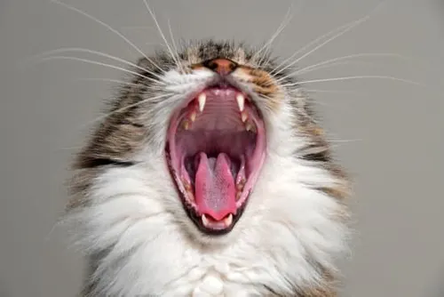

En Huellitas Felices rescatamos, rehabilitamos y cuidamos a perros y gatos en situación de calle. Nuestro objetivo es brindarles una segunda oportunidad y encontrarles un hogar responsable lleno de cariño.
Adoptar
Explorá nuestro catálogo de perros y gatos en adopción para encontrar a tu compañero ideal.
Mirá fotos, perfiles y personalidades de todos nuestros rescatados para encontrar con quién conectás mejor.
Crea tu cuenta o inicia sesión para enviar la solicitud de adopcion
Completá el formulario de solicitud de adopción y contanos un poco sobre vos y tu hogar.
Un administrador evaluará tu solicitud y se pondrá en contacto
Si tu solicitud es aprobada, coordinaremos una visita para que conozcas a tu nuevo amigo y asegurarnos de que sea el match perfecto.